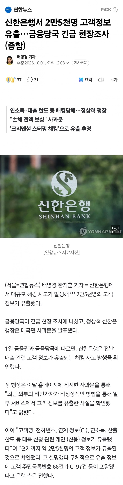

책상위에 공책 1승

책상위에 공책 1승
이젠 개인정보 아님 공공정보임
근데 궁금한게 외국 선진국에서도 우리나라처럼 저렇게 자주 해킹당해서 털리나?
수십년간 온갖 업데이트에 그놈의 액티브x에 모두 강제로 설치하게 해놓고 이렇게 자주 털리면 진짜 심각한건데...외국 리포터 나와주세요
https://www.joongang.co.kr/article/25387624
찾아보니 외국이라고 사건 안터지는거 아니긴한데
국내랑 다르게 과징금이랑 합의금이 상당하네
외국은 모르겠는데 예전 국내 금융권은 정부/국정원 지침이 망분리였음
망분리로 운영 하다 보니까 내부망은 걍 허벌인거임. 애초에 외부망/내부망이 철저하게 분리 되어 있으니까 내부망은 신경 안쓴거지.
근데 요즘들어 AI 랑 SaaS 가 많아지면서 망분리로는 위 서비스 이용을 못하니 슬슬 내외부망 연결해서 쓰되 제로 트러스트 라는 새로운 보안 가이드를 쓰라고 정책 가이드가 내려옴
이러다 보니 한번만 내부망에 들어오면 걍 다 털리는 구조가 된거임
맞는 말이지만, 저건 크리덴셜 스터핑임. 사람들이 아이디/비번 똑같이 쓰다보니, 한쪽에서 털리면 반대쪽 사이트도 털리는거임..
다만, 로그인까지는 성공했을순 있는데, 2차인증 없이 심각한 개인 정보들이 유출된게 은행측 문제일듯
크리덴셜 스터핑이라고 해도 외국IP나 국내동일IP에서 다른 아이디로 지속적으로 로그인 시도 하면 당연히 감지해야되는 거 아닌가?
외국 리포터는 아닌데 전공자피셜로 정보보안에 있어서 선진국 수준에 한참 미달임 법이건 제도건
지난준가 일본에 타임즈카라고 주차장이랑 카쉐어 같은거 하는 애들 있는데 털려서 600만건 가량 터짐 면허정보 포함이라던데
근데 이새끼들 종종 비밀번호 평문으로 메일로 쏴주는거 보고 안믿고 삼
이젠 그 액티브엑스가 해킹 취약점이 됨ㅋㅋ
뭘 ㅅㅂ 돌아가면서 다 털리네
죄송합니다(안죄송해)
아주 알짜로 털렸네..? 연소득보고 대상 추려서 피싱날리겠네 ㅋㅋㅋㅋㅋㅋㅋㅋㅋ
AI 때문에 요새 다 털리는 거 같음
3개월마다 비밀번호 바꾸라고! 그것도 싫으면 패스워드 관리 솔루션 쓰라고! 그냥 하면 되는건데 왜안해
심심하면 털리네
개인정보라고 하지말고 공공정보라고 부르면 해결
어쩐지 요즘또 좆같은 피싱 문자 이런거 존나오더라
그냥 한번이라도 유출당한새끼는 법적으로 정보 못갖고있게 해야함 시스템정비하는동안 영업도정지시키고
[국외발신]
Microsoft: ************에 비정상적인 로그인 내역이 있습니다. ㅁㅁㅁㅁㅁ에서 검토하세요.
이런거 존나옴 ㅅㅂ
헐겠다 시발년들아 그만 좀 털려
이쯤되면 대한민국 보안 관련법 대대적으로 정비좀 해야되는거 아닌가?
통신사부터 은행까지 다 털렸다면 공개만 안됐지 대한민국 서비스 업체들 사실상 다 털렸다고 봐야지
총대를 누가 잡겠음.
저거 건들면 윗대가리쪽 우리가 남이가 라인 싹 다 건드려야될껀데 대한민국에서 그게 될수가 없음.
당장 근래에 개인정보 털린곳이 존나 많은데 정부가 각잡고 후드려 팬곳은 쿠팡밖에 없음.
절대 못건드림ㅋ
한국사람들은 그거 안좋아함ㅋㅋ
정부24급 대응하면 되겠네
은행이니까 돈줘...
죄송합니다(어쩌라고?ㅋㅋ)
크리덴셀 스터핑은 좀... 솔까 대응하기 쉽지 않음
이정도면 개인정보는 수기로 관리해도 털리겠네 ㅋㅋㅋㅋ
?? : 불편하면 자세를 고쳐앉아
Ai때문에 보안 빡세진듯
쿠팡때는 왜 난리였었지? 쿠팡이 다르게 대응했었나
대가리 안박았음.
ㅎㅎ ㅋㅋ ㅈㅅ
SKT 신한 티빙 다털리네
휴 다행이다
연소득 없어서 ㅋㅋㅋ
연소득 대충 구라로 적었는데 다행인건가? ㅅㅂ
개인정보가 아니라 공개정보가 되어 버렸어.
ㅅㅂ 또 털렸네 주거래 은행인데
엊그제 대출신창하고왔는데 ㅋㅋㅋ
이제 안털린 곳 찾기가 힘드네
내 작고 귀여운 연봉 알아서 뭐 하게...
난도대체 몇번털리는거임?